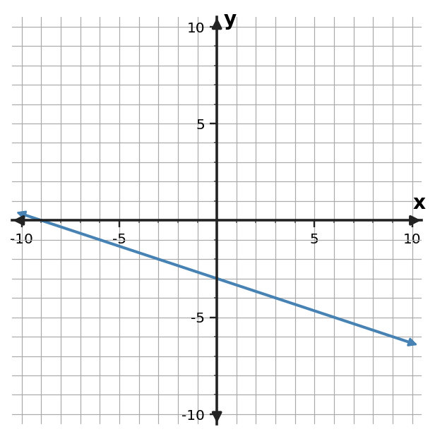
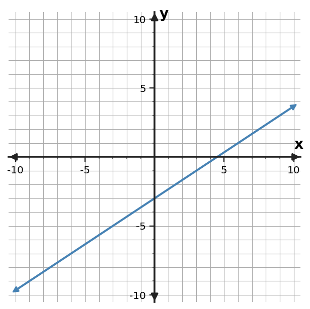
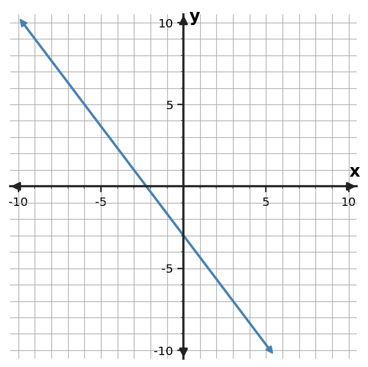

1. Write a linear equation in slope-intercept form for the line through $(-1,-3)$ and $(3,5)$.
1. Write a linear equation in slope-intercept form for the line through $(-1,-3)$ and $(3,5)$.
2. Write a linear equation in slope-intercept form for the line through $(0,6)$ and $(4,2)$.
3. Write a linear equation in slope-intercept form for the line through $(-2,-4)$ and $(2,8)$.
4. Write an equation in slope-intercept form for the relationship in the table.
| $x$ | $y$ |
|---|---|
| $-2$ | $-7$ |
| $0$ | $-5$ |
| $2$ | $-3$ |
| $4$ | $-1$ |
5. Write an equation in slope-intercept form for the relationship in the table.
| $x$ | $y$ |
|---|---|
| $-2$ | $10$ |
| $0$ | $4$ |
| $2$ | $-2$ |
| $4$ | $-8$ |
6. Write an equation in slope-intercept form for the relationship in the table.
| $x$ | $y$ |
|---|---|
| $-2$ | $3$ |
| $0$ | $7$ |
| $2$ | $11$ |
| $4$ | $15$ |
7. Write an equation in slope-intercept form for the graphed line. Use graph features as evidence.

8. Write an equation in slope-intercept form for the graphed line. Use graph features as evidence.

9. Write an equation in slope-intercept form for the graphed line. Use graph features as evidence.

10. A music lesson account starts with 20 dollars and adds 9 dollars per lesson. Let $n$ be lessons and $C$ be total cost. Write $C$ as a function of $n$. Identify the per-lesson change and starting amount.
11. A tank contains 50 liters and drains 3 liters each minute. Let $t$ be minutes and $V$ be volume. Write $V$ as a function of $t$. Identify the rate and starting volume.
12. A club has 14 members and gains 2 members each week. Let $w$ be weeks and $M$ be membership. Write $M$ as a function of $w$. Identify the weekly change and starting membership.
13. For $y=\frac{1}{2}x+5$, explain the roles of $m$ and $b$. Then give one ordered pair that must lie on the line.
14. For $y=5x-4$, explain the roles of $m$ and $b$. Then give one ordered pair that must lie on the line.
15. For $y=-3x+9$, explain the roles of $m$ and $b$. Then give one ordered pair that must lie on the line.
16. A linear relationship is represented by $y=4x-5$. Write a different equation that is equivalent to it after moving all terms to one side, and verify that $(3,7)$ satisfies both forms.
17. A linear relationship is represented by $y=-3x+8$. Write a different equation that is equivalent to it after moving all terms to one side, and verify that $(2,2)$ satisfies both forms.
18. A linear relationship is represented by $y=x+6$. Write a different equation that is equivalent to it after moving all terms to one side, and verify that $(5,11)$ satisfies both forms.
19. Rewrite $5(x+2)$ as an equivalent expression, then verify equivalence at $x=1$.
20. Rewrite $3(x-4)$ as an equivalent expression, then verify equivalence at $x=2$.
21. Rewrite $-2(x+5)$ as an equivalent expression, then verify equivalence at $x=1$.
22. Write a linear equation for the table and state the slope and starting value.
| $x$ | $y$ |
|---|---|
| $0$ | $6$ |
| $2$ | $8$ |
| $4$ | $10$ |
23. Write a linear equation for the table and state the slope and starting value.
| $x$ | $y$ |
|---|---|
| $0$ | $4$ |
| $2$ | $0$ |
| $4$ | $-4$ |
24. Write a linear equation for the table and state the slope and starting value.
| $x$ | $y$ |
|---|---|
| $0$ | $1$ |
| $2$ | $7$ |
| $4$ | $13$ |